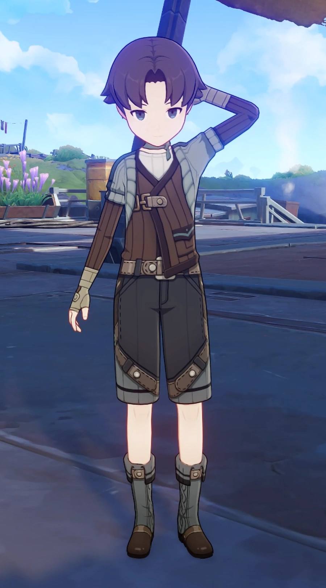
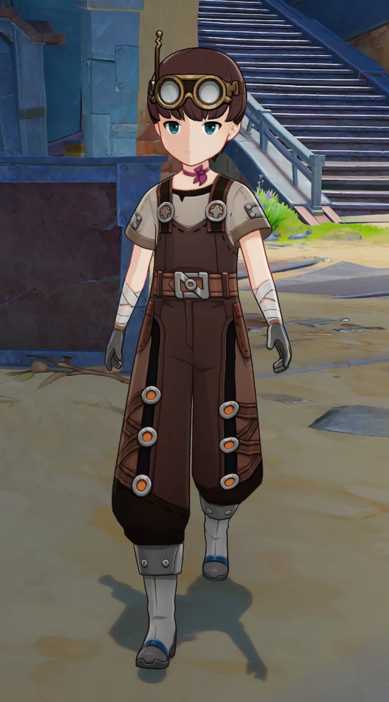
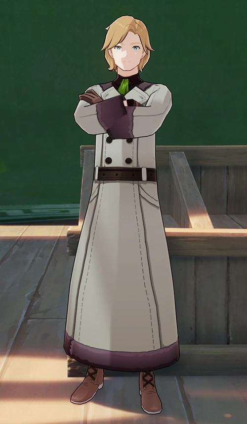
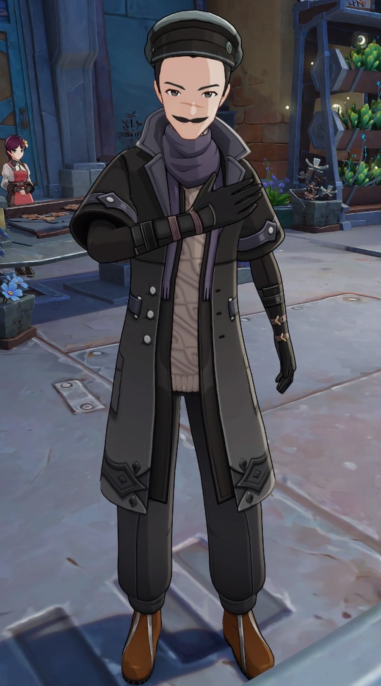
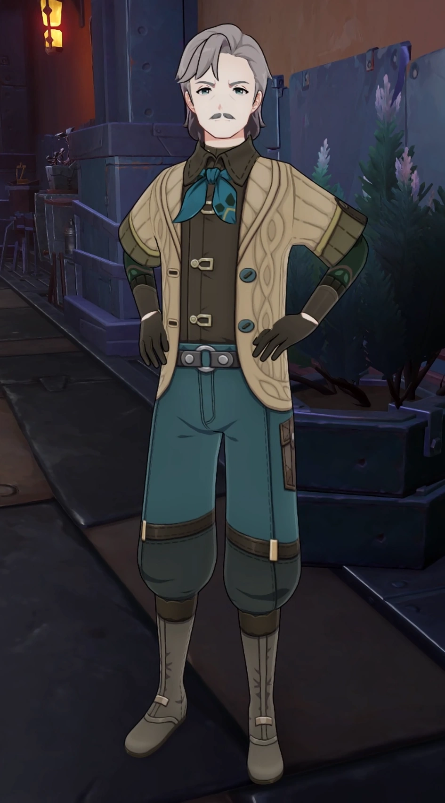
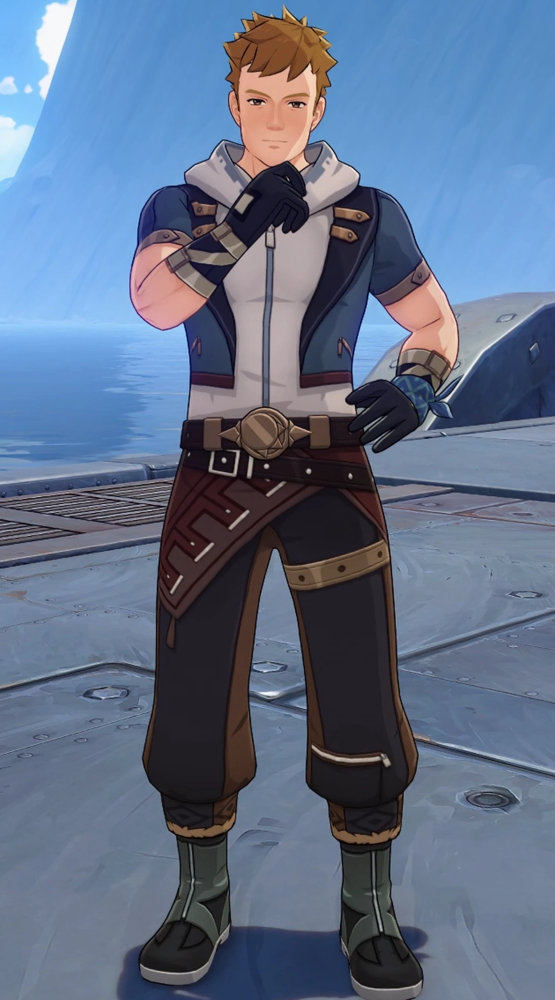
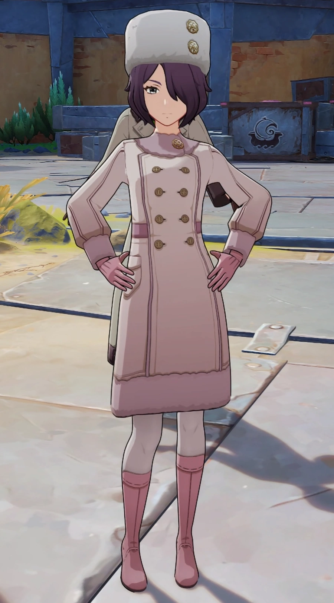
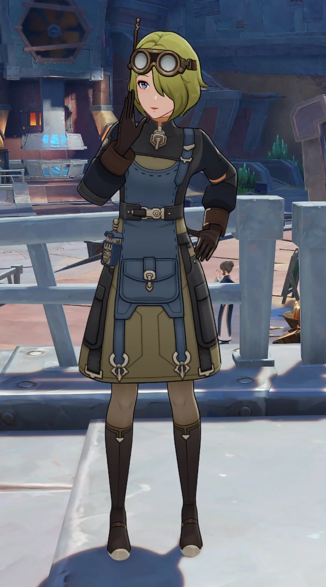
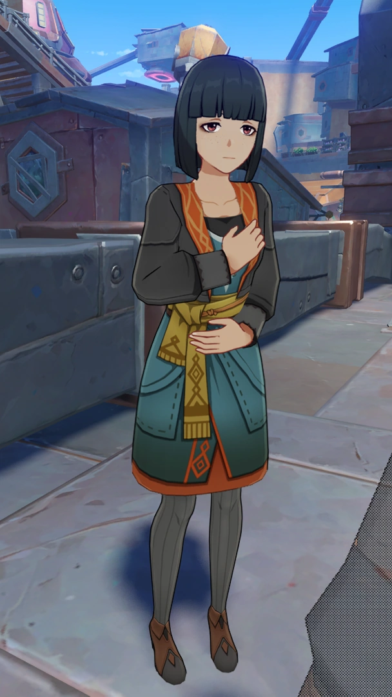
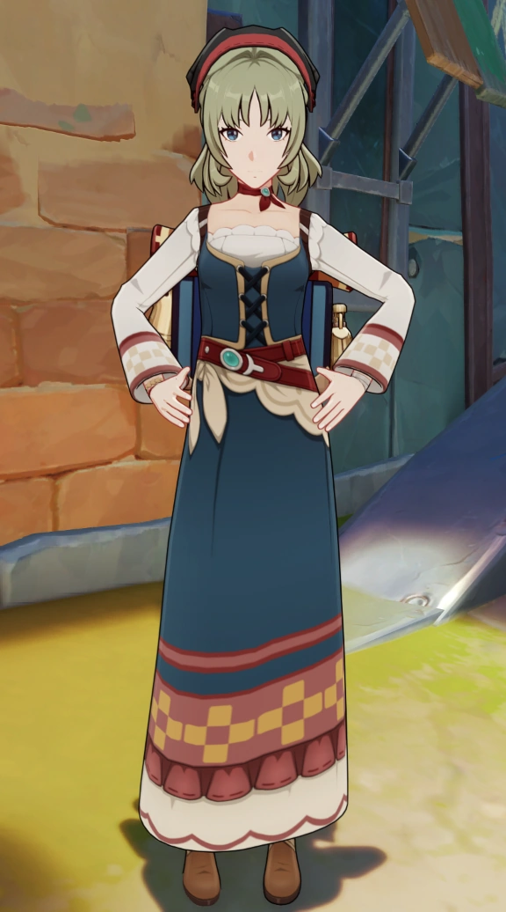

34ºc, Sunny
34ºc, Sunny - Tuesday, 18th June, 2019


Located north of Teyvat, above Mondstadt and Fontaine, it is characterized by perpetual snow and extreme storms. Known locations include the Polar Palace (Zapolyarny Palace) and the coastal village of Morepesok.
Due to Snezhnaya's harsh climate, people spend most of their time indoors and consider being alive to be a blessing in itself. There also seems to be a large emphasis on familial relations, as the Snezhnayans who have mentioned their family have been shown to be very close to them.
Camaraderie, cooperation and straightforwardness generally appear to be valued in Snezhnaya. The Adventurers' Guild, a mutual help organization for adventurers, was established in Snezhnaya,[2] while the Archive descriptions for Fatui Skirmishers remark that despite leaving their families to enter a dangerous profession, they have "gained allies to stick through thick and thin with". Tartaglia states that while Fire-Water is loved by most, those who drink it and chat together out in the cold gain the other's complete trust. Drinking an entire glass of Fire-Water in one go is the norm and considered to be very respectful
Snezhnayans also display remarkable devotion to their Archon, the Tsaritsa. Those who have been dispatched overseas and grown fond of their new country state that no matter the circumstances, they would never betray her.
"You make a pinkie promise, you keep it all your life. You break a pinkie promise, I throw you on the ice. The cold will kill the pinkie that once betrayed your friend, the frost will freeze your tongue off so you never lie again." —A Snezhnayan nursery rhyme
On the other hand, the strong sense of kinship and emphasis on loyalty makes them view any kind of disloyalty, betrayal, or "debt" as a deeply personal affront. This appears to be the most well-known aspect of Snezhnayan culture, as Paimon remarks that the above nursery rhyme "kinda says all you need to know about Snezhnayan culture,"The Fatui have an entire "debt collection" division that hunts down those who owe any "debt" to the Fatui, whether monetarily or from somehow offending the organization.
Snezhnayans also display remarkable devotion to their Archon, the Tsaritsa. Those who have been dispatched overseas and grown fond of their new country state that no matter the circumstances, they would never betray hAlthough considered a part of Snezhnaya, the Nod-Krai region is more independent. Many criminals consider the place their home and so do a large number of hard-working people, who scavenge in order to make local ends meet. There are many factions in the area, but one of the most key goods in Nasha Town is intelligence. Additionally, those unaware of the city's reputation will quickly find themselves targeted by criminals both inside and outside.
Various tribes and small pockets of people can be found across Snezhnaya. The Frostmoon Scions, who live on Hiisi Island, live a very simplistic life and tend to avoid Nasha Town. Snowland Faes, the followers of the previous Cryo Archon, live in Snezhnaya. They are much rarer in Nod-Krai, as Flins and Linnea are the only two fae that live there, and the Traveler has yet to encounter one outside of Flins.
Seaside regions of Snezhnaya primarily eat seafood. It is unknown whether this is true for all of Snezhnaya, or if this is largely limited to coastal towns. Snezhnaya is also known for its Fire-Water, an extremely powerful alcoholic blend.
According to Tartaglia, one authentic Snezhnayan dish is borscht, a name which in real life historically referred to various sour Slavic soups, but now usually refers to a red variety made with beetroots.
Another real-life Slavic food mentioned in-game (by the Fatui) are pierogi, implying they may be a part of Snezhnayan cuisine.
Due to the colder climate of Snezhnaya, wheat is hard to cultivate, so rye is used as its substitute. Additionally, some milk is converted to smetana instead of cream
Snezhnayan technology is undoubtedly superior to that of the other six nations. The Fatui military is notably the only known human faction in which all of its members are capable of elemental attacks, further highlighting their strength. The Fatui Skirmishers cover both ranged and melee departments, with their ranged fighters using guns or staves, while the Fatui Skirmisher - Electrohammer Vanguard wields a massive hammer and the Fatui Skirmisher - Anemoboxer Vanguard wields a pair of boxing gloves. The Skirmishers are also capable of imbuing their equipment, enhancing both offensive and defensive power at the same time. While there is a potential danger of the equipment shorting out and paralyzing the user, most of the equipment is able to restore itself over time, or immediately if an Anemoboxer is prese
Oprichniki are known to use a wide array of equipment, such as grenade launchers, wide-covering shields, imbued blades, cannons and gatling guns. Landcruisers are also known to make use of both guns and cannons, and some of them are additionally capable of hovering. These are all powered by kuuvahki, though the equipment's durability can be left ambiguous; the ones provided to lower-ranked Oprichniki are less durable and can break if overloaded, while higher ranks and landcruisers temporarily stop in the same scenario. The locals of Nod-Krai also utilise kuuvahki to some extent.
The knives used by Fatui Agents are made with superior technology and meant to take advantage of human weaknesses.
Harbinger Il Dottore's former Ruin Guard research facility requires no human personnel to operate, saving on manpower costs. Alice also remarks that when she visited Snezhnaya, there were massive factories pumping out a wide assortment of items, which have yet to be seen in any other nation.
Alongside standard Visions, some Snezhnayans also make use of Delusions, a variant of Visions handed down by the Tsaritsa. They can be manufactured in large numbers, but often require remnants from deceased gods for their creation. The Eleven Fatui Harbingers all possess a Delusion, as do several Fatui specialists.
The people of Nasha Town tend to rely on scrap metal that arrives in the nation. Many robots and devices not in the Fatui's jurisdiction make use of the leftover scrap, most of which were made by Aino. Because this metal comes from across the nations, her creations have numerous compartments in them. Most of these are suited for general use, but a few are also used for defense, such as Knuckle Duckle and Ineffa; they are on par or even stronger than Fatui machinery despite their humble origins.
Due to the colder climate of Snezhnaya, wheat is hard to cultivate, so rye is used as its substitute. Additionally, some milk is converted to smetana instead of cream
The following designs, motifs, and symbols are typically seen on Snezhnaya-related parties.
As the only two playable characters from Snezhnaya itself so far are Tartaglia and Arlecchino, who are the two from the Eleven Fatui Harbingers, it is unknown whether non-Fatui Snezhnayans will have a different Character Card. (For example, there are two different Liyue Character Cards depending on whether the character is affiliated with the adepti or not.)
Character Cards for those affiliated with the Fatui depicts eleven emblems, each representing a Harbinger, arranged in the negative space between the larger and smaller circles. It is assumed that the emblems are also their Constellations, as Tartaglia's (the bottommost one, Scaramouche's - now Wanderer's (the one at 4 o' clock direction), and Arlecchino's (the one at 3 o' clock direction) - are the same symbol used for their in-game Constellations, Monoceros Caeli, Peregrinus, and Ignis Purgatorius, respectively.
For characters associated with Nod-Krai, a circle-like shape is present with small fragments on top. On top of the circle is the associated character's element affiliation. The emblems on the sides represents the factions noted to be present in Nod-Krai.
In clockwise order:
Top right represents the Lightkeepers, guardians of Nod-Krai against the Wild Hunt. Upper center-right is the emblem of the Hexenzirkel. Center right is the emblem of the Clink-Clank Krumkake Craftshop. Lower center-right is the emblem of the Voynich Guild. Lower center-left is the emblem of the Snowland Fae, followers of the original Cryo Archon. Center left is the emblem of the Mondstadt-based Knights of Favonius. Top center-left is the emblem of the Frostmoon Scions, devotees of Kuutar located on Hiisi Island. Top left is the emblem of the Fatui.
Full image of the Harbinger Card

Tartaglia's Character Card

Arlecchino's Character Card
The Palestar Banner is the logo of the Fatui that is typically seen on their masks and/or clothing and designate the person's affiliation with them. It depicts a stylized, filled-in Solomon's knot on top of another circular emblem.
Snezhnaya is the second-wealthiest nation in Teyvat after Liyue. This is primarily the result of Harbinger Pantalone, who determines Snezhnaya's economic policies and is particularly driven to make Snezhnaya the wealthiest nation in all Teyvat
Using their factories to mass-produce household wares, Snezhnaya exports their goods to other nations in Teyvat.
The Northland Bank and Adventurers' Guild were founded in Snezhnaya, and have established themselves across Teyvat, primarily in large cities.
Boys' attire, version 1 (Teucer)
Boy's attire, version 2 (Mikko)
Boy's attire, version 3 (Jalo)
Men's attire, version 1 (Ivanovich)
Men's attire, version 2 (Viljami)
Men's attire, version 3 (Pentti)
Men's attire, version 4 (Przybor)
Girl's attire (Maisie)
Women's attire, version 1 (Perasa)
Women's attire, version 2 (Liouba)
Women's attire, version 3 (Mahla)
Women's attire, version 4 (Gorchakova)
Little is currently known about Krsnik Noc beyond the fact that it is celebrated in Snezhnaya. Ivanovich likens the festival mood during Lantern Rite to Krsnik Noc celebrations.
Currently, it appears that Snezhnaya is directly governed by the Tsaritsa and the Fatui. Some of the Eleven Fatui Harbingers also play vital roles in Snezhnayan politics, domestic and/or intentionally.
Most of Snezhnaya's foreign relations are handled by the Fatui, though their aggressive negotiation style and constant political and economic encroachment have given them a negative reputation. However, this does not seem to have greatly affected merchants who are not directly linked to the Fatui like Ivanovich and Maksim, who have not faced any explicit prejudice from natives. The Adventurers' Guild, despite hailing from Snezhnaya, also does not appear to have any negative reputation linked to it; however, it is also possible that its nation of origin is not common knowledge.
Domestically, little is known about the Fatui's reputation within Snezhnaya. However, it is hinted that ordinary citizens have little dealings with the Fatui on a day-to-day basis and see them largely as a military organization. Tartaglia claims he doesn't want his family "to have anything to do with the Fatui's... or should I say, Snezhnaya's... darker side."
The city of Nasha Town, located in the southern region of the nation, is instead regulated by the Voynich Guild, who uphold most of the law and order in the area.
The Fatui conscript Snezhnayans into military training, but the qualifications for conscription are currently unknown and it seems that not all who enter military training necessarily join the Fatui.
The Eleven Fatui Harbingers have their own subordinates and use them as they see fit. They tend to have representatives for diplomatic matters and soldiers for any conflicts that arise. The Harbinger's personality tends to reflect on their subordinates, who are loyal to them; Ororon thought that Capitano's soldiers were well experienced and had good moral standards,[19] while a good number of Signora's soldiers desired revenge against The Shogun after she slew the Harbinger for losing a duel before the throne.[
Members of the Fatui military consist of Skirmishers and more advanced groups, sent to a region based on their higher-ups' orders. They are also divided by military rank, with the known ranks being recruit, sergeant and lieutenant. While powerful, Skirmishers do not operate on their own, but instead work with their comrades to surround and overwhelm enemies.
In areas not covered by Skirmishers, the Oprichniki instead fill the role of soldiers. Unlike their Skirmisher cousins, Oprichniki are formally recruited and trained and primarily focus on defending critical areas or being placed in the deadliest frontline battles. They are also given elemental equipment, with a focus on weapons rather than armor. Each soldier specializes in a different area and they are also trained in melee combat. Although ranks are not well-known, there is a staff officer role amongst the Oprichniki. Raskolnikov holds the rank of Poruchik in the Oprichniki.
The House of the Hearth, led by Arlecchino, takes in orphans from across Teyvat and raises them to be loyal to the Tsaritsa. When they grow up, they can be assigned various tasks, such as assassinations, espionage and sabotage. They are said to have stations across Teyvat, though the only one that is seen is the Hotel Bouffes d'ete in Fontaine. The group also makes use of Fatui Operatives.
Higher-ranked members, such as Agents, tend to work alone, or with other similarly ranked members. These higher ranks make use of Delusions alongside their equipment. Oprichniki officers are also assigned Delusions, though their roles mean that most of them generally work alongside their lower-ranked counterparts in various tasks such as surveillance or overseeing their training.
Prominent Fatuus can enroll in the Snezhnaya Royal Military Academy, and almost every Oprichniki officer was trained there. A large amount of Oprichniki officers originally started off as Bombardiers, implying that promotion is based on merit.
In Nod-Krai, the Fatui maintain a presence at the Kuuvahki Experimental Design Bureau. They are not the primary law enforcers of the area. The local force in this area are the Lightkeepers, who help protect both the locals and travelers against the dangers of The Wild Hunt, an abyssal force that has deeply contaminated several areas in the region. Lightkeepers use a large array of weapons and special lanterns that help repel the darkness of the Abyss.